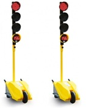
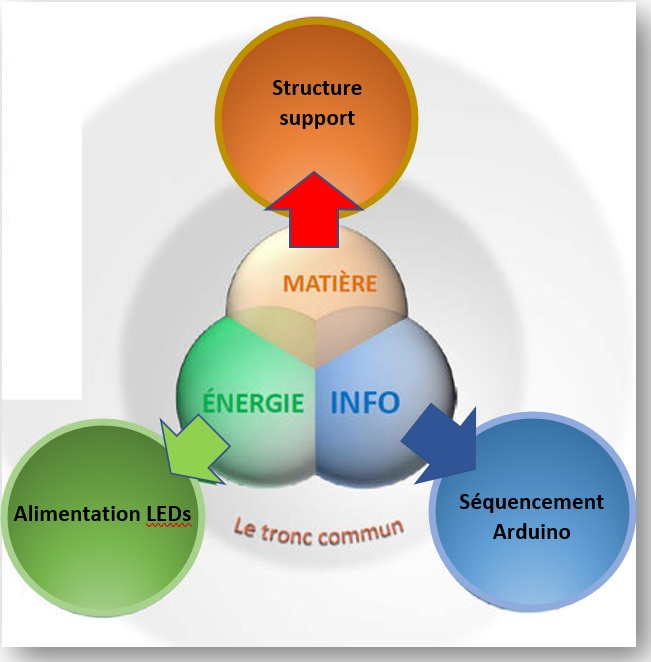

Objectif : Comment concevoir et réaliser un système de feux tricolores de chantier automatisé permettant d'assurer une régulation sécurisée et temporisée du trafic ?


Lors de chantier (réfection de route, construction d’immeuble, etc….) il faut assurer la régulation du trafic des véhicules en toute sécurité. C’est pourquoi nous positionnons des feux tricolores de chantiers aux abords.
Il y a deux feux pour gérer les deux sens de circulation. Dans le cadre de ce projet vous allez en réaliser un.
L'objectif est de réaliser un feu tricolore de chantier en partant de l’existant et en le complétant. Ce feu de chantier doit pouvoir être déplacé facilement.
En groupe (commun à toutes les parties) :
Elaborer un cahier des charges avec les divers éléments en votre possession.
Carte mentale
Diagramme SysML
Vidéo de présentation du projet complet.
Réaliser une présentation de votre projet sous un format de 2 minutes de manière dynamique. (Depuis les croquis jusqu’au prototype en passant par la modélisation et test).
Soutenance orale.
A la fin du projet vous passerez une soutenance orale de 5 minutes. Vous présenterez votre démarche et une démonstration du fonctionnement de votre système.
Assurer la création et la gestion des feux. (Séquencement, durée d'allumage, etc...)
Réaliser une structure permettant d'accueillir les feux
Assurer la gestion et l'affichage du temps d'attente
Gérer l'aspect alimentation du système
➢ Carte arduino, grove relais
➢ Diodes, résistances, batterie 12V
Logiciel arduino
Solidworks
FabLAB
Manuelle